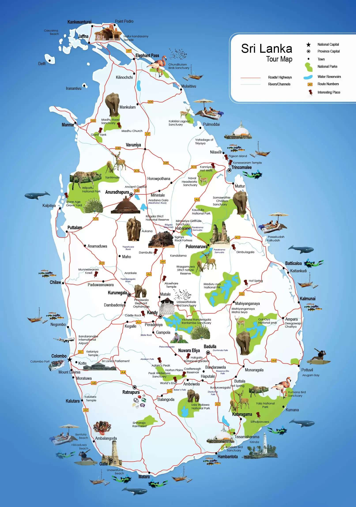

A personal guide built to help you find the real Sri Lanka.

"Sri Lanka deserves more than a highlight reel — it deserves an honest, detailed guide."
Ceylon Wonders was built to fix a simple problem: most travel sites about Sri Lanka either read like recycled brochures or bury useful details under sponsored content. This site exists to give travellers something more reliable — honest, first-hand guidance to the island's destinations, experiences, and hidden corners.
There's no large team behind the scenes, no paid placements, and no filler. Every destination write-up, itinerary idea, and recommendation on this site is based on genuine, first-hand experience — not repackaged press releases.
The goal is simple: help you find the Sri Lanka that doesn't show up in brochures — the chai at a roadside tea shack at 5am, the elephant crossing a jungle trail, the fisherman's sunrise in Negombo. The real island, described honestly.
Everything on this site reflects a consistent set of principles.
Only places and experiences that respect local communities, wildlife, and the environment are featured. If it harms the island, it won't appear here.
Family-run guesthouses, village food stalls, and local guides are prioritised over large tourist chains — so your money stays in the community.
No paid placements, no sponsorships that distort recommendations. Every suggestion is somewhere that's been personally visited and genuinely recommended.
Guides cover the real experience — the crowd at the wrong time, the slippery trail, the hidden gem around the corner. No sugar-coating.
Practical safety tips, seasonal advice, and honest assessments of difficulty are part of every destination guide.
Sri Lanka keeps changing. This site is regularly revisited and updated so guides stay accurate and useful.
A timeline of how this site came together.
The earliest research began with trips across Sigiriya, Polonnaruwa, and Anuradhapura — the first notes that would later shape this site's guides.
A month spent exploring Ella, Haputale, and Knuckles produced the detailed hiking and tea-country guides now featured on the site.
Research trips to Jaffna and the Mannar coast added guides to a side of Sri Lanka most visitors never see.
Years of notes, photos, and recommendations were finally turned into this website — a practical, honest guide to Sri Lanka.
Guides are continually updated and expanded, with new destination content added as more of the island is explored.
"Sri Lanka is small enough to feel intimate and vast enough to surprise you every single time. I've been exploring it for over a decade and I'm still not done. I hope this site helps you find your own version of this extraordinary island."
— Chadunika Hettiarachchi, Founder · Ceylon Wonders
Born and raised in Sri Lanka, Chadunika has spent over a decade travelling the island and built Ceylon Wonders to share that first-hand experience with other travellers.
I read every message personally and try to reply within 24 hours.
Get in Touch →